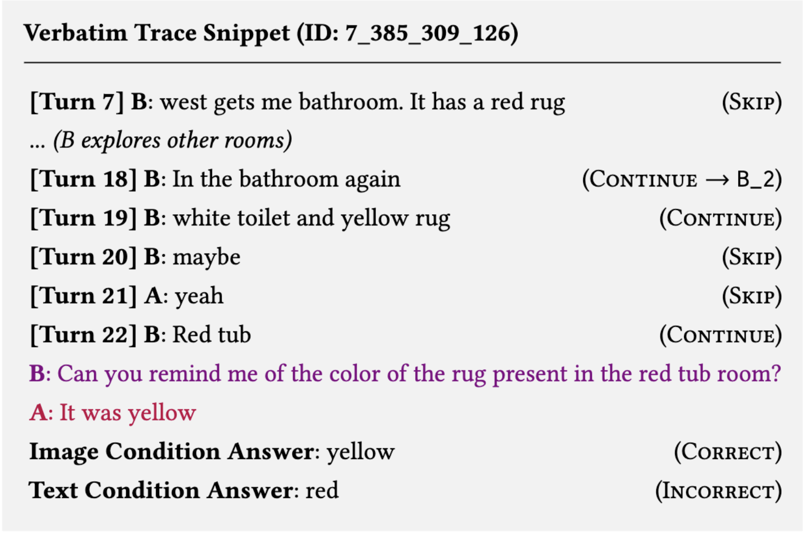
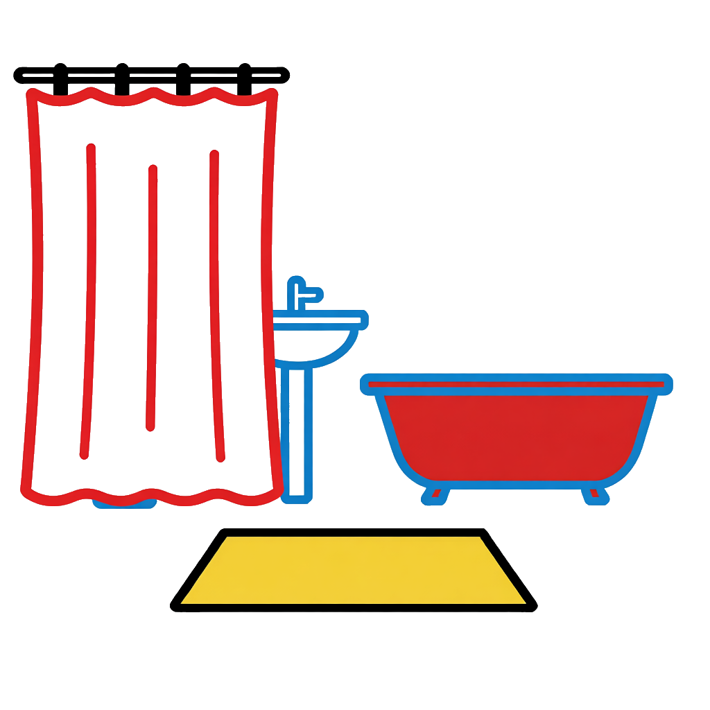
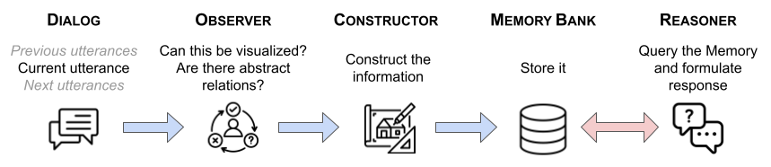
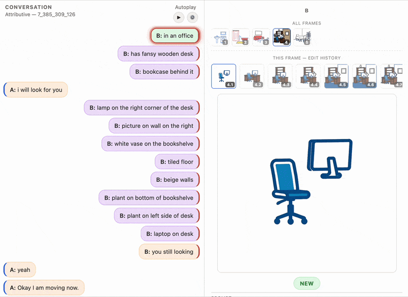

In a nutshell
People offload memory constantly: we write things down, sketch a floor plan, draw a diagram on a napkin. It is a way of turning something we might misremember into something we can check. Conversational AI agents don't do this: everything they know about a conversation lives in text, and text naturally compresses, losing specific details for a more general overview. In our example, two different rooms, described across a long dialogue, can start to blur into one.
We asked a simple question: what happens if an AI agent could sketch what it understands, the same way a person might, and check its own sketch later instead of relying on textual memory alone?
Abstract
Situated dialogue requires speakers to maintain a reliable representation of shared context rather than reasoning only over isolated utterances. Current conversational agents often struggle with this requirement, especially when the common ground must be preserved beyond the immediate context window. In such settings, fine-grained distinctions are frequently compressed into purely textual representations, leading to a critical failure mode we call representational blur, in which similar but distinct entities collapse into interchangeable descriptions. This semantic flattening creates an illusion of grounding, where agents appear locally coherent but fail to track shared context persistently over time. Inspired by the role of mental imagery in human reasoning, and based on the increased availability of multimodal models, we explore whether conversational agents can be given an analogous ability to construct some depictive intermediate representations during dialogue to address these limitations.
Thus, we introduce an active visual scaffolding framework that incrementally converts dialogue state into a persistent visual history that can later be retrieved for grounded response generation. Evaluation on the IndiRef benchmark shows that incremental externalization itself improves over full-dialog reasoning, while visual scaffolding provides additional gains by reducing representational blur and enforcing concrete scene commitments. At the same time, textual representations remain advantageous for non-depictable information, and a hybrid multimodal setting yields the best overall performance. Together, these findings suggest that conversational agents benefit from an explicitly multimodal representation of common ground that integrates depictive and propositional information.
Example
In one dialogue (taken from human-human conversations), Speaker B visits a bathroom, mentions a yellow rug, leaves, returns some turns later, and mentions a red tub in what they call "the bathroom again." Later, B is asked what color was the rug in the room with the red tub.

🔍
🔍An agent relying only on a text summary of the conversation answered red. It had folded the two visits into one compressed description, and the tub's color overwrote the rug's. An agent that had instead sketched the room, then updated the sketch as new details came in, answered yellow, the correct answer.
Method

🔍To build a faithful representation, we let each new utterance pass through an Observer, which decides whether it changes the scene at all. Most turns don't: small talk, confirmations, and false starts are skipped. When a turn does introduce or revise a detail about the scene, the Observer flags it and hands it to the Constructor, which renders the update into an explicit artifact (a schematic image in our main condition; a dense text summary in a comparison condition built the same way). These artifacts accumulate into a Memory Bank: one visual history per speaker, since each speaker in the original human-human task occupies their own room and only shares what they say out loud.
The resulting sketches are deliberately schematic rather than photorealistic. A photorealistic render would force the model to invent details the dialogue never specified. Instead, we color-code each object by how certain it is: black for confirmed and located, red for confirmed but unplaced, blue for assumed but never stated. Uncertainty stays visible on the canvas instead of getting smoothed over.
At query time, a Reasoner takes a question, retrieves the relevant artifacts from memory (matching both the image itself and its attached metadata), and answers from what it retrieves, the same way one would consult notes rather than trying to recall the entire conversation from scratch.
Watching it build
Here, another example, where we can see how a representation gets iteratively edited: each time the Observer flags an update, a new (green bubble) or revised (purple bubble) sketch appears.

🔍Even if roughly sketched, the details are there and are maintained for later use. The full, browsable version of this trace is in the Interactive Visualization.
Results
The questions a model has to answer can be divided depending on the charactersitic of the object of the question, so that one has to rely on different kind of reasoning (temporal, spatial, attributive, or inferred). On the left, the different conditions we tested.
| Framework | Temporal | Spatial | Attributive | Inferred |
|---|---|---|---|---|
| FD (Qwen3-VL-Thinking) | 0.18 | 0.10 | 0.20 | 0.24 |
| FD (Qwen-QwQ) | 0.32 | 0.38 | 0.40 | 0.40 |
| Agentic-Text | 0.42 | 0.26 | 0.44 | 0.46 |
| Agentic-Image | 0.50 | 0.24 | 0.44 | 0.58 |
| Agentic-Both | 0.58 | 0.44 | 0.64 | 0.52 |
We observe that building an incremental memory helps regardless of format: both the image and text agents beat a baseline that reasons over the raw transcript, on every question type. Agentic-Image does better on temporal, attributive, and inferred questions than textual alone, where the win comes. Agentic-Text holds a small edge on spatial questions, probably given that room-to-room transitions are easier to state as a sentence than to recover from a set of separate images.
Combining both (Agentic-Both, one memory bank holding a sketch and its paired text summary for every update) produces the best results overall: 58% on temporal, 44% on spatial, 64% on attributive. The one exception is inferred questions, where the image-only agent (58%) slightly beats the combined one (52%). Adding text back in appears to reintroduce some of the ambiguity that forcing a concrete sketch had removed.
Limitations
Sketches struggle with anything that isn't a positive, depictable fact. When a speaker asks "it's not yellow?", that question reveals real information about their own room, but it's phrased as a negation, so the Observer skips it and nothing gets drawn. Cross-room reasoning is the other weak point: connecting one sketch to the next relies on a separate set of extracted relations, and when those links are missing or too weak to retrieve, the agent locks onto the wrong room even when the sketch it needed was rendered correctly.
Explore the Data
Browse full example conversations turn-by-turn, including the generated imagery for both participants at every step, in our Interactive Visualization.
Open the Interactive VisualizationBibTeX
@article{mohapatra2026UsingMachineMentalImagery,
title = {Using Machine Mental Imagery for Representing Common Ground in Situated Dialogue},
author = {Mohapatra, Biswesh and Duca, Giovanni and Romary, Laurent and Cassell, Justine},
journal = {arXiv preprint arXiv:2604.21144},
year = {2026}
}